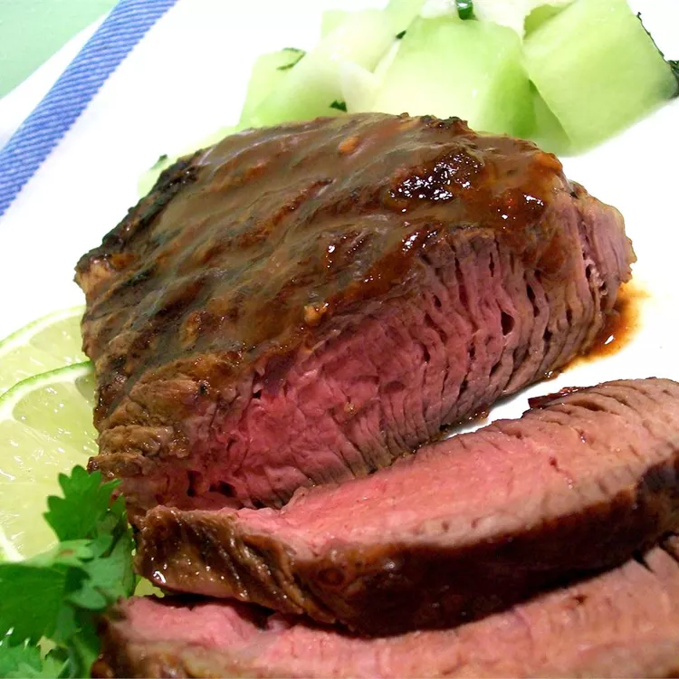

ADOBO

Ingredients
- 1 medium lime, juiced
- 1 tablespoon minced garlic
- 1 teaspoon dried oregano
- 1 teaspoon ground cumin
- 2 tablespoons finely chopped canned chipotle peppers in adobo sauce
- 2 tablespoons adobo sauce, or to taste
- 4 (8 ounce) beef sirloin steaks
- salt and pepper to taste
Steps
- Whisk lime juice, garlic, oregano, and cumin together in a small bowl.
Stir in adobo peppers and adobo sauce.
- Pierce steaks on both sides with a sharp knife; sprinkle with salt and pepper.
Place steaks into a glass baking dish. Pour adobo marinade over top; turn steaks until well coated.
Cover the bowl with plastic wrap and marinate in the refrigerator for 1 to 2 hours.
- When ready to cook, preheat an outdoor grill for high heat and lightly oil the grate.
- Remove steaks from marinade and shake off excess. Discard remaining marinade.
- Grill steaks on the preheated grill for 6 minutes per side, or to desired doneness.
An instant-read thermometer inserted into the center should read 140 degrees
F (60 degrees C) for medium.
Nutrition Facts
- Calories 342
- Fat 19g
- Carbs 4g
- Protein 38g